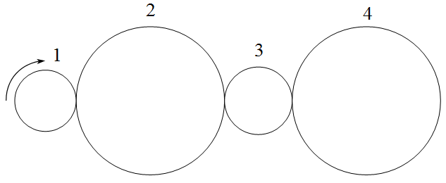

Gear trains appear when a single pair does not deliver the desired ratio, when the wheelbase needs to be overcome or when you want to select different outputs within the same architecture. The central point is to separate two questions: which gears mesh with each other and which gears are rigidly attached to the same axle.
Gear-pair ratio
For two external gears, the relationship between the angular velocities is given by the inverse ratio of the tooth counts. The negative sign indicates that the rotation directions are opposite.
When an external gear meshes with an internal one, the direction does not reverse and the signal becomes positive. This convention is useful because it forces you to record the nature of each contact, rather than just calculating velocity modules.
Simple gear train
In the simple train, each axle has a single gear relevant to the transmission chain. The intermediate gears change the direction of rotation and allow the axes to be spaced, but they do not change the modulus of the final relationship between the first and last gears when they are all external and only intermediate.
This tends to surprise you at first. If gear 1 drives gear 2, gear 2 drives gear 3 and gear 3 drives gear 4, the intermediate teeth appear on the product and then cancel each other out. The final result depends on the first and last, while the number of gears defines the direction.

Compound gear train
In a compound train, two or more gears rotate together on the same axis. In this case, gear ratio is not just reduced to the first and last. Each active pair contributes to the total product, while the coupled gears share the same angular velocity.
The correct reading is topological. First, the pairs that really mesh are identified. Then, the common axes are recorded. Only then is the relationship multiplied. Trying to start directly with the teeth, without understanding the assembly, is a common way of mixing gears that do not belong to the same power path.
Train value
Train value is a compact way of representing the relationship between output and input. In many courses, it appears as the ratio of the speed of the last gear to the speed of the first, with the signal carrying the direction information. The name is simple, but the concept becomes powerful when used with discipline.
In ordinary trains, train value summarizes a fixed chain. In planetary gear trains, the idea will be reused with speeds relative to the carrier. This continuity is didactically important: planetary gear sets do not require abandoning the notion of gear ratio, but applying it in a mobile reference frame.
Analysis sequence
- name the gears and identify the teeth of each one;
- mark the pairs in contact and indicate whether they are external or internal;
- mark which gears are attached to the same shaft;
- multiply active pair relationships;
- check the final direction by the number of inversions or the signs adopted.
This sequence avoids treating all drawings as variations of the same formula. In real mechanisms, the difference between a simple train and a compound one lies precisely in the architecture of the axles.